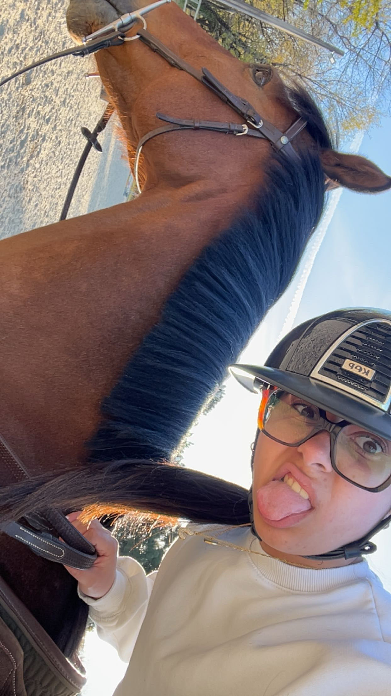
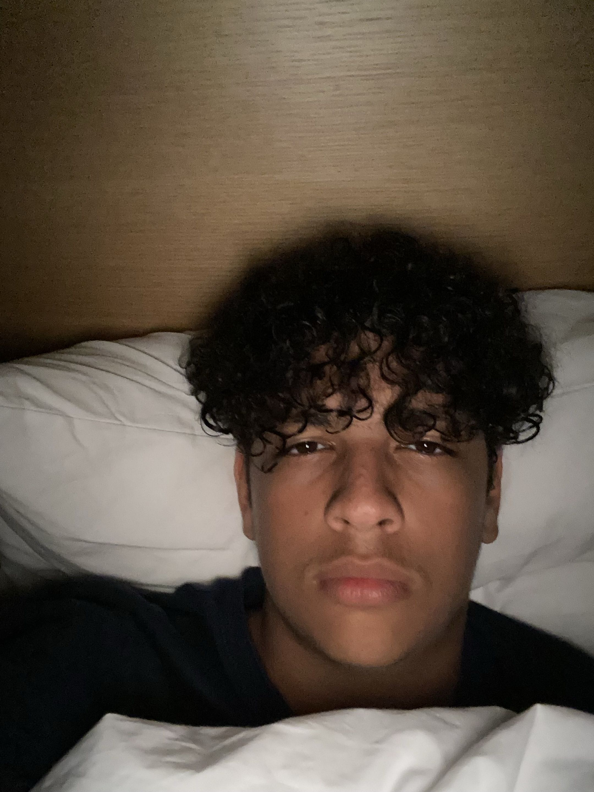
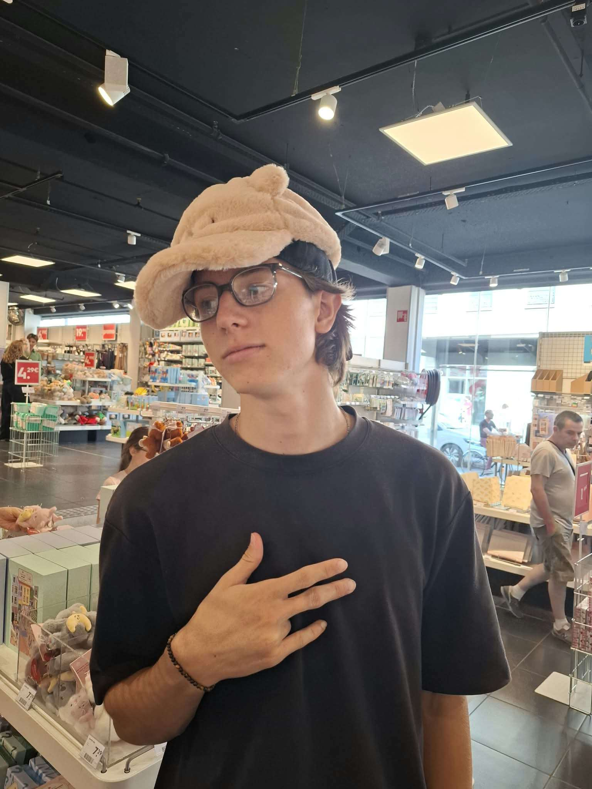
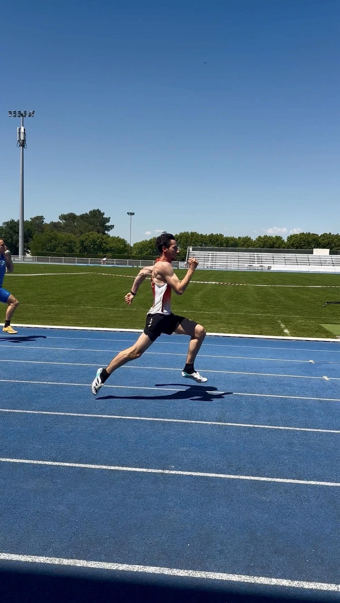
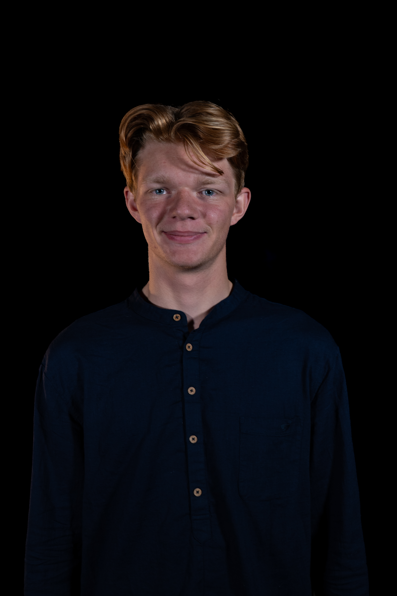

Informatique
Andy Abbas
Étudiant hors pair et créateur de Y-Noubliables, imprévisible quand on parle de code.

Informatique
Nathan Beaudri
Plusieurs petits boulots avant Ynov, fan de Zelda, de musique et de voyage.

Cybersécurité
Noah Bernadet
Bac SVT/physique, fan de mangas et de jeux, discussion facile.

Informatique
Catalin Cornescu
Chill en apparence, crack d'informatique qui codait déjà des jeux.

Cybersécurité
Jade Delahaye
Débute en code, curieuse et sympathique.

Informatique
Neil Djebali
Reconversion depuis le bâtiment, part de zéro mais très motivé, utilise Blender.

Audiovisuel
Enzo Dumeniaud
Fan d'anime, parti en audiovisuel, chaleureux.

Cybersécurité
Mathys Durand
Ex-boucherie, 10 ans de rugby, débutant en informatique.

Cybersécurité
Lucas Eisenecker
Accueillant et sympa, joue très offensif au foot en salle.

Informatique
Bryan Wilfried
Ex-comptabilité, reconverti en programmation, sportif.

Cybersécurité
Mathias Fontagne
Codait en Python depuis le lycée (NSI), bosseur, grimpeur.

Informatique
Theo Fouchard
Bac STI2D, dans l'équipe LoL d'Ynov, a fait du skateboard.

Cybersécurité
Tehaunui Georges
Chill, collectionneur de cartes Pokémon, attiré par la robotique.

Informatique
Quentin Helm
Codeur depuis la 5e, passionné de web, athlète, travailleur.

Cybersécurité
Gautier Humbert
Venu de Suisse, très à l'aise en informatique, aide volontiers les autres.

Cybersécurité
Evan Janavel
Bac général avec NSI, fan de jeux vidéo, soigne son style.

Cybersécurité
Thiery Kouame
Bac scientifique, travailleur, s'est lancé en info grâce à un ami.

Cybersécurité
Guillaume Larre
En reconversion, très sérieux, adepte de salle et de MMA.

Cybersécurité
Antoine Lestieux
L'humour le plus décalé de la classe, sportif, attachant.

Informatique
Yannis Marais
Convivial, travaille chez KFC, fan de Pokémon.

Cybersécurité
Antoine Mortelette
Passionné de voile et d'informatique, rarement seul.

Cybersécurité
Amaury Outters
Passionné de MMA depuis 2 ans, un mec chill.

Cybersécurité
Louis Pedro
Très bon style vestimentaire, humour partagé avec Amaury et Antoine.

Cybersécurité
Brian Petitcolas
Ex-métallurgie, reconverti en informatique, relax et tatoué.

Cybersécurité
Samuel Pinaquy
10 ans de tennis, bac maths/physique, cool.

Cybersécurité
Lalie Plagelet
Fiable, excellent niveau d'anglais (C2), conversation facile.

Cybersécurité
Lucas Sallette
Passionné de pêche et d'animés.

Cybersécurité
Antoine Sanchez
Très à l'aise à l'oral, joue Joker sur Smash, capitaine LoL de la B1.

Informatique
Thomas Sombrun
Ancien lanceur de poids en championnat de France, passé par l'armée.

Informatique
Ethan Touchat
Fan de manhwa, de jeux vidéo et d'animés.

Cybersécurité
Rayane Touré
Ex-commerce, fan de foot, a mené son équipe à la victoire au Five.

Cybersécurité
Neo Zangrilli
Discret mais très bon en code, fan de jeux vidéo et de voyage.

Son
Souhaib Elsharkawy
Parti en audiovisuel, humour imprévisible, aime le cinéma.